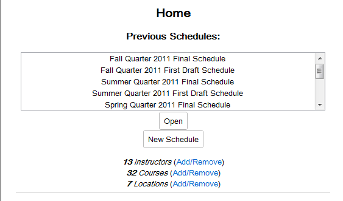

Once an administrator has successfully had their credentials validated and logged in, they are greated with the "Home" screen. This screen displays a list of all previous schedules, in addition to the ability to create a new schedule or edit the list of instructors, courses, or locations.

Figure 1: The Home screen
The "Previous Schedules" list displays a list of all schedules saved to the department. The user may view or edit any schedule by selecting it from the list and clicking 'Open'. Doing so opens the schedule in the default list view. From here, the user may print the schedule, perform edits, or save a copy of the schedule.
The ability to save a copy supports a wide array of functionality. If a user wishes to use an old schedule as a template for a new one, they may easily load up the old schedule and save a copy as the new quarter, then load the new copy and edit it as appropriate for the quarter in question. This also makes it quick and easy to make backups or multiple versions of an in-progress schedule.
The "Home" screen also provides the user the ability to create a new, blank schedule. Doing so will present the user with the blank schedule editor. See that slide for additional information on creating a new schedule.
The 'Add/Remove' links at the bottom of the "Home" screen allow the user to manage instructors, rooms, and locations. This functionality allows the user to edit instructors, classes, and rooms before creating a schedule.